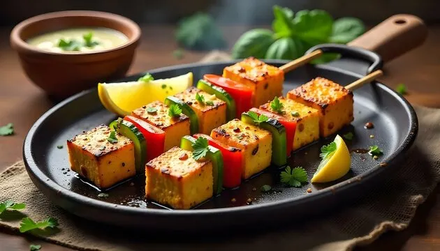

RESTAURANT MENU
Non-Veg | Starters |
Beverages | Desserts
-
Veg
- Paneer Butter Masala
- Chole (Chickpea Curry)
- Palak Paneer
- Dal Makhani
- Aloo Gobi
-
Non-Veg
- Butter Chicken
- Tandoori Chicken
- Rogan Josh
- Fish Curry
- Chicken Korma
-
Starters
- Samosa
- Paneer Tikka

- Chicken Tikka
- Tandoori Fish Tikka
- Hara Bhara Kebab
-
Bevagers
- Masala Lassi

- Sweet Lassi
- Chaas (Buttermilk)
- Masala Chai

- Nimbu Pani

-
Deserts
- Gulab Jamun
- Gajar ka Halwa
- Rasmalai
- Jalebi
- Rasgulla
BACK TO TOP